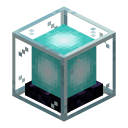
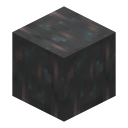
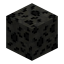

Summary#
| Structure | ID | Where | How common | What's there |
|---|---|---|---|---|
| Morag Temple | infinity: | Morag, ocean floor | One per world |  Orb, arrow traps Orb, arrow traps |
| Norse Village | infinity: | Overworld | One per world |  Tesseract Tesseract |
| Aether Chamber | infinity:aether | Svartalfheim, underground | One per world |  Aether, Malekith Aether, Malekith |
| Vormir's Edge | world feature | Vormir, always in the same place | One | The Soul Guardian |
| Sanctum Sanctorum | infinity: | Overworld | One per world |  Eye of Agamotto Eye of Agamotto |
| Sanctuary | infinity: | The End | One per world |  Scepter Scepter |
| Infinity Temple | infinity: | Overworld, any biome | Common | Loot chest,  Temple Beacon |
| Crashed Kree Ship | infinity: | Overworld, plains | Uncommon |  Cosmi-Rod Cosmi-Rod |
| Dwarf Star Meteor | infinity: | Overworld, on land | Very common |  Dwarf Star Meteor |
| Uru Meteor | infinity: | Svartalfheim | Very common |  Uru Ore |
You can find any of them except Vormir's Edge with / while you're in the right dimension, though for
the five with fakes it may find a fake. Vormir's Edge is always next to 0, 0 on Vormir. The Sanctuary, Morag Temple, Vormir's
Edge and Uru Meteor don't have screenshots here yet.
Stone structures#
The five stone structures are placed like strongholds: exactly one per world, at a random angle on a ring around 0, 0. The distances are rough and measured from the world origin.
Morag Temple#
The flooded temple from Guardians of the Galaxy (71 × 28 × 34), on the ocean floor of Morag, about 18,500 to 35,300 blocks
out. Where the sea is shallow it sinks into the floor, so it is always fully under water, and so are its fakes. The courtyard is open to the sea, but the sealed hall inside stays dry. Two rows of dispensers full of Arrows of Harming VII cover the hall. The Orb rests on an armor stand. Built by DogBoi64.
Norse Village#
A small Norse church (15 × 24 × 23) in the Overworld, about 18,500 to 35,300 blocks out. Dark oak signs and a lectern tell
its story, and the Tesseract lies on the floor behind them. After the Nine Realms were at peace, Odin left the
Tesseract here in the care of Asgardian worshippers. It's a slightly redone version of the Norse Village from Lucraft's  Heroes Expansion.
Heroes Expansion.
Aether Chamber#
A big buried chamber (56 × 118 × 57) that starts down around Y −60 on Svartalfheim, about 4,400 to 8,400 blocks
from the origin. The Dark Elves sealed the Aether in here after Bor decided it was too dangerous to destroy. It lies on the floor,
guarded by Malekith: a husk with his own model, 100 health, 20 armor and 10 toughness, permanent Speed VI,
Strength VI and Resistance III, and Malekith's Sword. He's a proper fight, so bring armor. The chamber was built by DogBoi64.
Vormir's Edge#
Vormir's cliff isn't a normal structure. It's built one chunk at a time, always in the same place on Vormir, covering X 0 to 271 and
Z 0 to 191 from Y 63 up. The Soul Guardian stands at the top at about 212 121 99 and only spawns once per world.
Vormir's Edge was built by DogBoi64. The Soul Guardian's trades are on Finding the Stones.
If your world already had Vormir from an older version of the mod, it keeps it, and the Soul Guardian isn't spawned a second time.
Sanctum Sanctorum#
Doctor Strange's sanctum (36 × 36 × 25), home of the Masters of the Mystic Arts, in the Overworld about 7,300 to 14,000 blocks
out. The Eye of Agamotto stands on an armor stand inside. Built by DogBoi64.
Sanctuary#
Thanos's old domain (38 × 31 × 41), also called Chitauri space, out on the End islands about 7,300 to 14,000 blocks from
the origin. The Scepter is on display in an invisible glow item frame.
Decoys#
The Sanctum, Norse Village, Sanctuary, Aether Chamber and Morag Temple each have a fake twin with the same building and nothing on the floor, in the frame or on the stand. Fakes are rare (1% per 100 chunk region) and can show up anywhere their biome is allowed. If you find one close to spawn, check how far from the origin you are. Server owners can switch the fakes off, or the real structures, in the config.
Each fake uses its real structure's ID (infinity: for both Morag Temples, and so on), so /locate and
mods like Explorer's Compass can't tell them apart and lead to whichever is closer. The Soul Guardian's explorer maps always lead to the
real one. Operators can find it with /infinity locate_real.
How they used to be#
- Before v3.3 the Morag Temple generated in the End.
- In v3.3 and earlier the Aether Chamber was much smaller and generated in the Nether.
Other structures#
Infinity Temple#
A small temple (11 × 7 × 11) all over the Overworld (one every 42 to 67 chunks, 69% chance). In the middle is a Temple Beacon
that shines a beam into the sky with no pyramid, so you can spot temples from far away. The chest always has 1 to 4
 Aspects of Existence, plus 4 to 8 rolls of ores, ingots, diamonds, emeralds, golden apples,
Aspects of Existence, plus 4 to 8 rolls of ores, ingots, diamonds, emeralds, golden apples,  Palladium metals, the mod's own
metals and sometimes
Palladium metals, the mod's own
metals and sometimes  Shards of Existence.
Shards of Existence.
Crashed Kree Ship#
A small crashed ship (24 × 8 × 7) in plains (one every 50 to 100 chunks, 20% chance). The chests are a joke ("Haha empty chests ;)").
The real prize is the Cosmi-Rod lying on the floor. Like the Norse Village, it's a redone version of the one from
Heroes Expansion.
Dwarf Star Meteor#
A small crater (14 × 7 × 13) with Dwarf Star Meteor blocks in it. Common across the Overworld (every 40 to 80 chunks, 95% chance), in forests, taigas, savannas, badlands, jungles, plains, sunflower and snowy plains, deserts, meadows and the windswept hills. They don't spawn in oceans, rivers, swamps, beaches, caves or the mountain peaks.
Uru Meteor#
The same crater shape on Svartalfheim, made of Svartelheim Stone with Uru Ore in it.